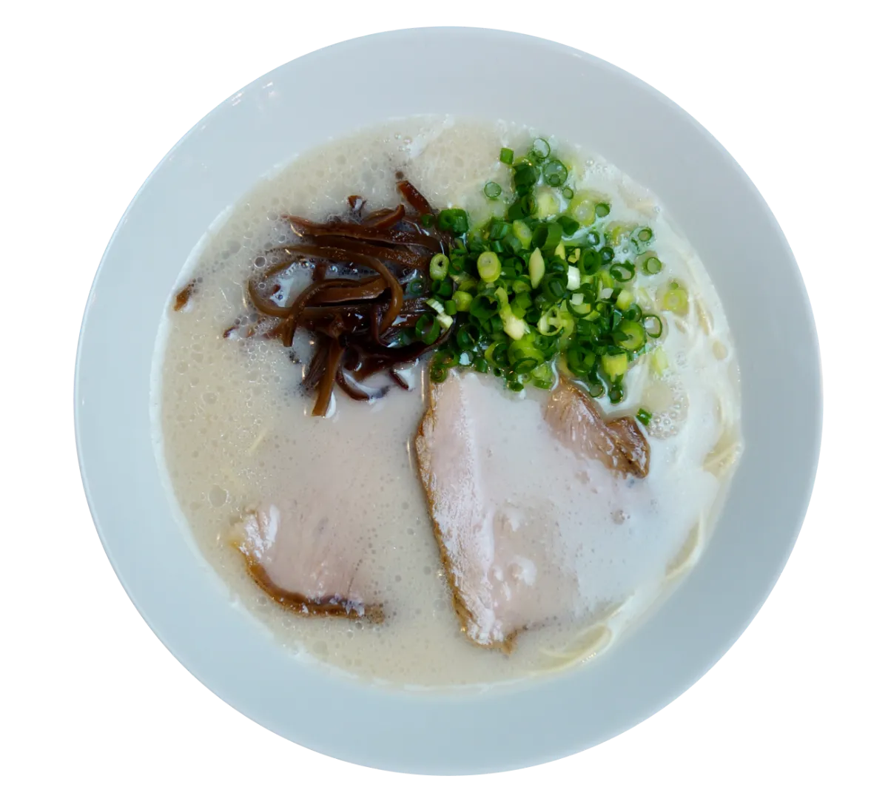
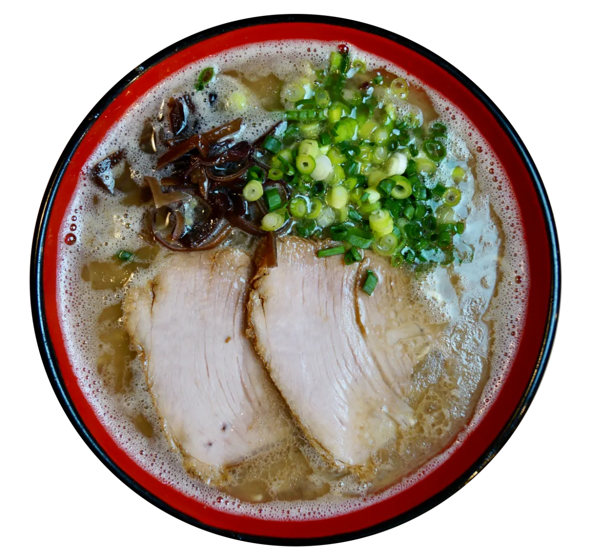

福岡県粕屋郡新宮町
玄界灘に面した海岸線と、南東部の立花山など、海と山の両方を楽しめる
大東建設が実施した【福岡県版】「幸福度が高い街」ランキング２０２４では第一位に選ばれました 詳しくはこちらから
緑豊かな環境と都市の利便性を兼ね備えた、住みやすい町として注目
相島
「猫の島」として国内外から注目されている小さな離島
新宮漁港からフェリーで約17〜20分。JR福工大前駅や西鉄新宮駅からバスで港まで行けるため、博多駅からでも1時間ほどで到着が可能
島のシンボル「鼻栗瀬（はなぐりせ）」は、高さ約20mの海蝕洞で、中央がぽっかり空いた“めがね岩”として人気の撮影スポット
ろくでなし
メニュー あっさり，こってり，辛麺
炒飯が自分的にとてもお勧め！
また、トッピングの高菜がとても辛く良いアクセントになる

